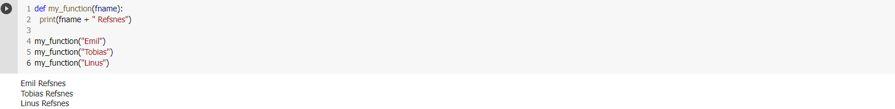
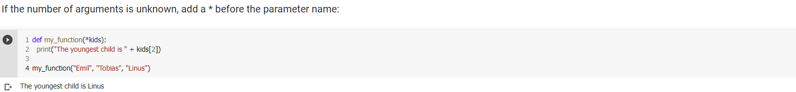

Functions
Python Functions
A function is a block of code which only runs when it is called.
You can pass data, known as parameters, into a function.
A function can return data as a result.
Creating Function
In Python a function is defined using the def keyword:

Calling a Function
To call a function, use the function name followed by parenthesis
Arguments
Information can be passed into functions as arguments.
Arguments are specified after the function name, inside the parentheses. You can add as many arguments as you want, just separate them with a comma.
The following example has a function with one argument (fname). When the function is called, we pass along a first name, which is used inside the function to print the full name:

Parameters or Arguments?
The terms parameter and argument can be used for the same thing: information that are passed into a function.
From a function's perspective:
A parameter is the variable listed inside the parentheses in the function definition.
An argument is the value that is sent to the function when it is called.
Number of Arguments
By default, a function must be called with the correct number of arguments. Meaning that if your function expects 2 arguments, you have to call the function with 2 arguments, not more, and not less.
Arbitrary Arguments, *args
If you do not know how many arguments that will be passed into your function, add a * before the parameter name in the function definition.
This way the function will receive a tuple of arguments, and can access the items accordingly:

Keyword Arguments
You can also send arguments with the key = value syntax.
This way the order of the arguments does not matter.

Arbitrary Keyword Arguments, **kwargs
If you do not know how many keyword arguments that will be passed into your function, add two asterisk: ** before the parameter name in the function definition.
This way the function will receive a dictionary of arguments, and can access the items accordingly:
Default Parameter Value
The following example shows how to use a default parameter value.
If we call the function without argument, it uses the default value:
Passing a List as an Argument
You can send any data types of argument to a function (string, number, list, dictionary etc.), and it will be treated as the same data type inside the function.
E.g. if you send a List as an argument, it will still be a List when it reaches the function:
Return Values
To let a function return a value, use the return statement:
The pass statement
function definitions cannot be empty, but if you for some reason have a function definition with no content, put in the pass statement to avoid getting an error.
Recursion
Python also accepts function recursion, which means a defined function can call itself.
Recursion is a common mathematical and programming concept. It means that a function calls itself. This has the benefit of meaning that you can loop through data to reach a result.
The developer should be very careful with recursion as it can be quite easy to slip into writing a function which never terminates, or one that uses excess amounts of memory or processor power. However, when written correctly recursion can be a very efficient and mathematically-elegant approach to programming.
In this example, tri_recursion() is a function that we have defined to call itself ("recurse"). We use the k variable as the data, which decrements (-1) every time we recurse. The recursion ends when the condition is not greater than 0 (i.e. when it is 0).
To a new developer it can take some time to work out how exactly this works, best way to find out is by testing and modifying it.